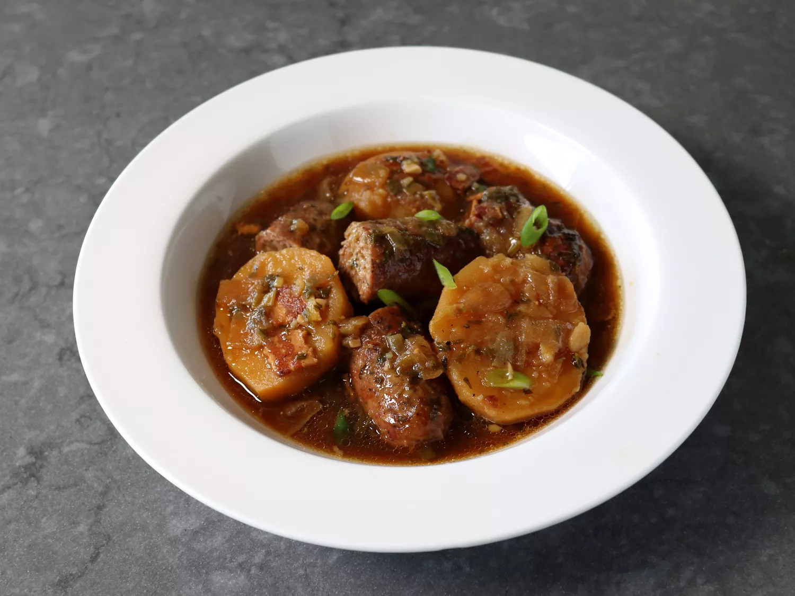

Irish Sausage and Potato Stew

Description
Dublin coddle is a delicious stew featuring Irish Sausage and Yukon Gold potatoes. Cooked low and slow in the oven, it is the perfect dish for St. Patrick’s Day.
As the story goes, this adorably named dish would be prepared early in the evening by one spouse, and left to slowly simmer on the stove, or "coddle," while the other spouse was enjoying a pint or three at the pub. After the barkeep would say something like, "You don’t have to go home, but you can’t stay here," they would head back to enjoy a big bowl of Dublin Coddle.
Ingredients
- 8 strips thick-cut bacon, cut into 1 inch pieces
- 2 tablespoons butter
- 2 yellow onions, chopped
- 4 cloves garlic, minced
- 1 cup chopped green onions, plus more to garnish top
- 1 cup stout beer
- 1 tablespoon fresh thyme leaves
- 1/4 cup chopped Italian parsley
- freshly ground black pepper, to taste
- 2 teaspoons kosher salt, or to taste
- pinch cayenne
- 3 pounds Yukon Gold potatoes, peeled and halved
- 4 cups chicken broth
- 6 large pork sausage links, about 2 1/2 pounds total
Steps
- Cook bacon in a Dutch oven or a large oven-safe pot with a lid over medium heat, turning occasionally, until evenly browned, about 10 minutes. Add butter, onions, and pinch of salt, and cook until onions are soft and translucent. Add garlic, and green onions, and cook stirring for 2 minutes.
- Pour in beer, raise heat to high, and cook, stirring occasionally, until beer has reduced by about 75%. While beer is reducing, season with thyme, parsley, black pepper, salt, and pinch cayenne. Once beer has reduced, add potatoes and broth and bring to a simmer.
- Top with Parmesan cheese.
- Preheat the oven to 300 degrees F (150 degrees C).
- Prick sausage on both sides, and add to the pot on top of the other ingredients.
- Cover and place pot into the preheated oven. Cook for about 2 1/2 hours. Remove the lid, and continue cooking uncovered for about 1 more hour.
- Remove from oven and skim excess fat from top before serving. Garnish top with green onions, if desired.